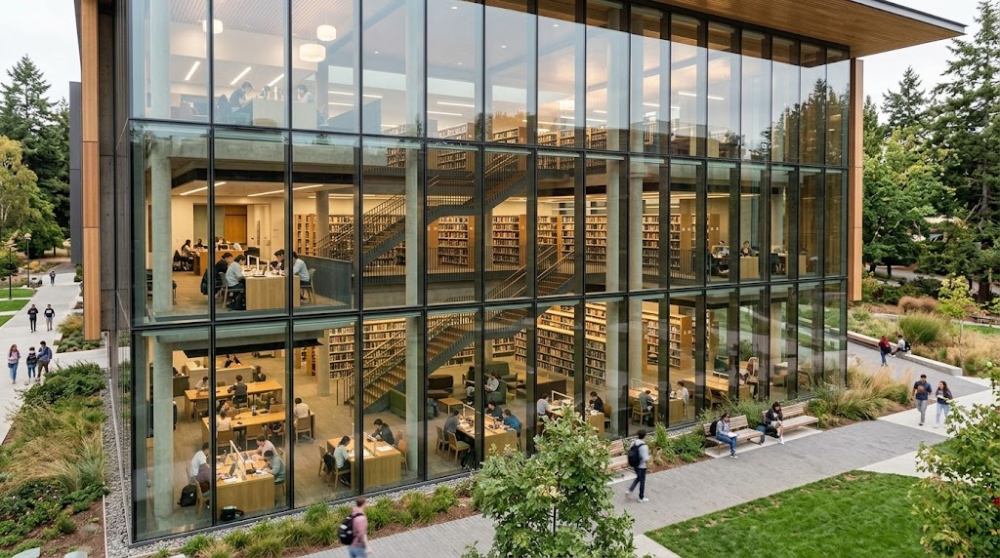

Biblioteca Central

A Biblioteca Central oferece um espaço para leitura, pesquisa e estudos individuais ou em grupo. Seu acervo reúne livros de tecnologia, administração e outras áreas do conhecimento.
Localização e funcionamento
Categoria: Espaço de estudo e pesquisa.
Localização: Bloco A, térreo.
Horário: segunda a sexta, das 8h às 22h, e sábado, das 8h às 12h.
Acesso: apresente sua identificação estudantil na entrada.
Serviços oferecidos
- Empréstimo de até três livros por sete dias.
- Consulta ao acervo dentro da biblioteca.
- Computadores para pesquisas acadêmicas.
- Salas de estudo em grupo mediante reserva.
- Orientação para encontrar livros e materiais de pesquisa.
Recursos de acessibilidade
- Entrada sem degraus e corredores amplos.
- Mesas adaptadas para pessoas em cadeira de rodas.
- Computadores com leitores de tela.
- Sinalização em braile.
- Equipe disponível para auxiliar na localização dos livros.
Orientações de uso
Mantenha o silêncio nas áreas de estudo individual, evite consumir alimentos e cuide dos materiais. As reservas das salas devem ser feitas no balcão de atendimento.
Devolva os livros dentro do prazo para que outros estudantes também possam utilizá-los.